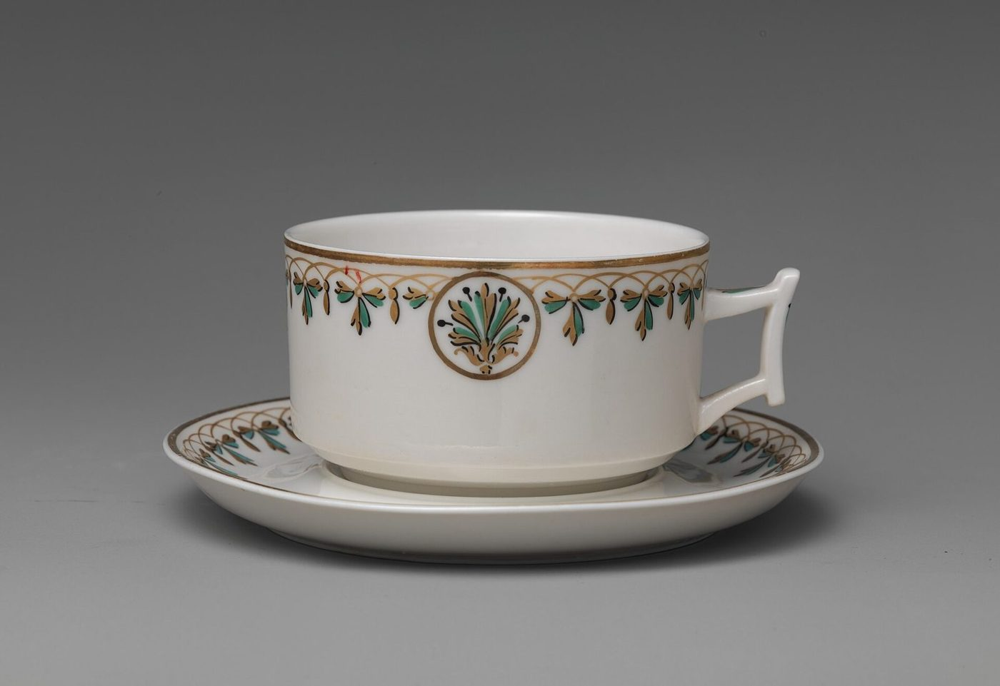

口コミ 5
想像した声
カフェという業種から想像できる声を、制作側が創作したものです。
以下は制作側の創作で、実在のお客様の投稿ではありません。実際の口コミ・評価とは関係ありません。温度センサー(5)が小さな変化を伝えるように、3枚を並べています。
営業時間などが分かったら、行ってみたいです。それまでは、Instagramの更新を楽しみにしています。
お店のInstagramをのぞいてみたいです。投稿を見て、気になるコーヒーが載っているといいなと考えています。
営業時間や定休日が載ったら、行ってみる日を考えたいです。準備が整うのを楽しみに待っています。

